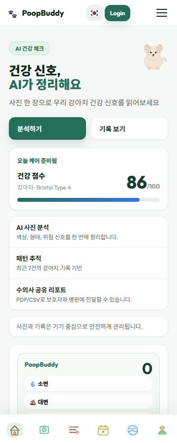
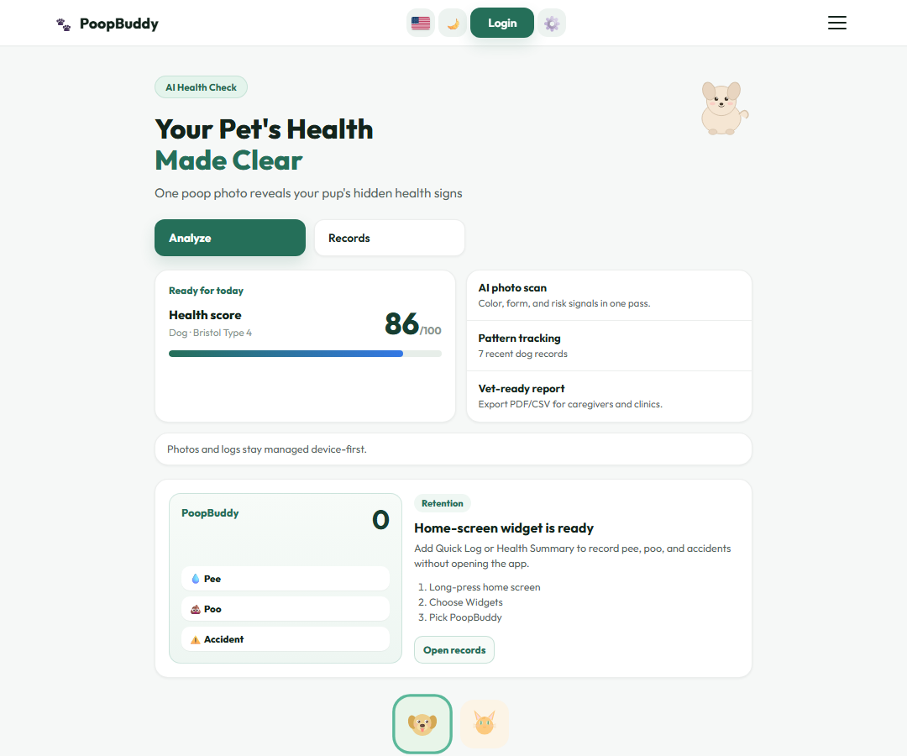
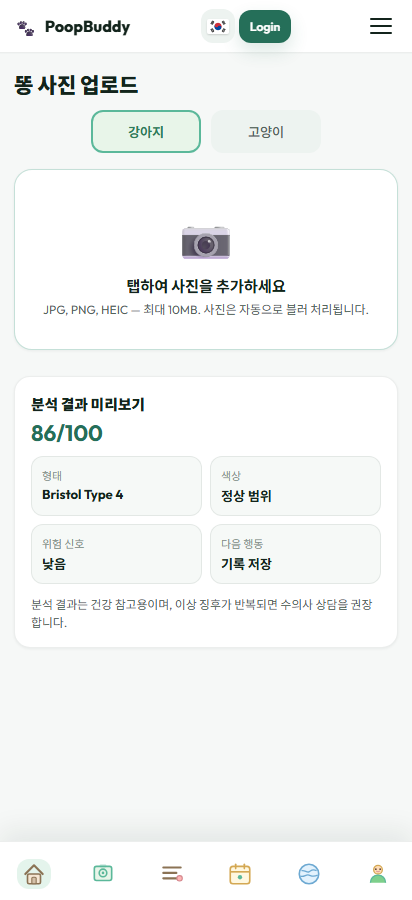
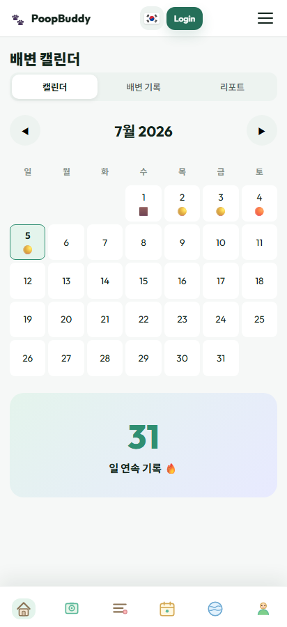
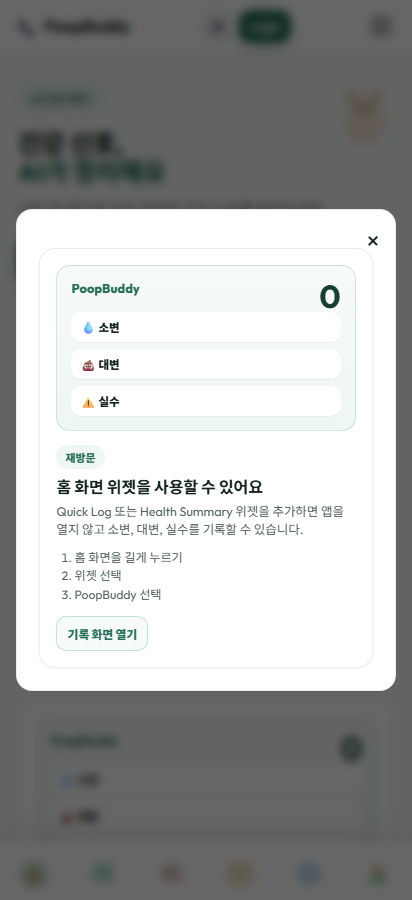

Keep a daily record from the app or Android home screen widgets, then review counts and timing by pet.
AI pet gut-health tracker for Android
PoopBuddy
Log pee, poop, accidents, and stool photos for dogs and cats. See daily patterns, AI-assisted gut-health signals, report-ready summaries, and Android home-screen widgets without digging through menus.
Dogs and cats
Android widgets
KO / EN / JA
Wellness reference, not diagnosis


Bathroom tracking built for daily care.
PoopBuddy focuses on the small records that become useful when a pet's digestion changes: quick logs, photo notes, calendar trends, and clean exports for caregiver or veterinary conversations.
Capture stool photos and organize color, shape, Bristol Type references, risk signals, and a 0-100 gut-health score.
Prepare PDF/CSV style care summaries, manage local records, and keep medical guidance framed as wellness support.
Real app screens, ready for repeated use.
No marketing mockup guesswork: these are current PoopBuddy captures covering home, analysis, calendar, and widget guidance.



Launched for Korean, English, and Japanese caregivers.
The Google Play listing is publicly visible in KR, US, and JP locales with the Android widget update reflected.
강아지와 고양이의 배변 기록, 사진 분석, 캘린더 패턴, 홈 화면 위젯을 한 곳에서 관리합니다.
Track pet bathroom routines, gut-health clues, and widget-based quick logs for everyday care.
犬と猫の排便記録、写真メモ、カレンダー傾向、ホーム画面ウィジェットをまとめて確認できます。
Carefully framed health guidance.
Does PoopBuddy diagnose disease?
No. PoopBuddy is for wellness reference and care organization. It does not replace veterinary diagnosis, treatment, or emergency care.
What makes the widget useful?
Caregivers can log pee, poop, and accidents from the Android home screen and see today's summary without opening the full app.
Which languages are ready first?
Korean, English, and Japanese are the first polished locales. Other markets can use English fallback until more translations are completed.